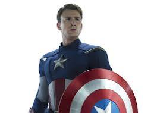

The honorable Steve Rogers is a Super Soldier who acts a sentinel of liberty to protect innocents when donning the star-spangled mantle of Captain America. Initially rejected by the U.S. Army during World War II due to his frail physique, he volunteered for Project Rebirth. The experimental Super-Soldier Serum developed by Dr. Abraham Erskine greatly enhanced his body to the peak of human physicality. Wielding an indestructible shield, Captain America is a master martial artist who focus on acting defensively. Alongside his partner Bucky and the Invaders, he helped the Allies win the war, but not before becoming lost at sea and frozen in ice in suspended animation for decades. Having been thawed out in the modern age, Captain America continued to fight for justice alongside his new teammates, the Avengers.